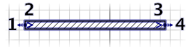
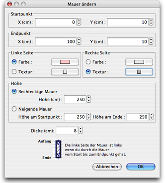

| Wände ändern | |||
Sie können die Lokation und die Länger einer Wand entweder mit der Maus oder über das Plan > Wände modifizieren... Menü
verändern. Wenn eine Wand ausgewählt ist, können Sie darüber hinaus auch den Start- und den Endpunkt verschieben, indem Sie den Indikator am Ende und am Anfang der Wand auswählen.  |
|
Wenn der Mauszeiger über dem Start- oder Endpunkt ist, verändert er sich, um zu zeigen,
dass Sie per Drag&Drop den Punkt versetzen können. Während Sie die Maustaste drücken, zeigt ein
Tooltip die Länge der Wand an. Eine Wand kann außerdem über ihr Menü verändert werden. Doppelklicken Sie auf eine Wand im Plan oder wählen Sie Plan > Wände editieren..., nachdem Sie eine Wand ausgewählt haben.  Im Menü der Wand können Sie die Koordinaten ihres Start- und Endpunktes verändern, die Farbe ihrer
Textur der rechten und linken Seite, die Dicke und die Höhe. |
|